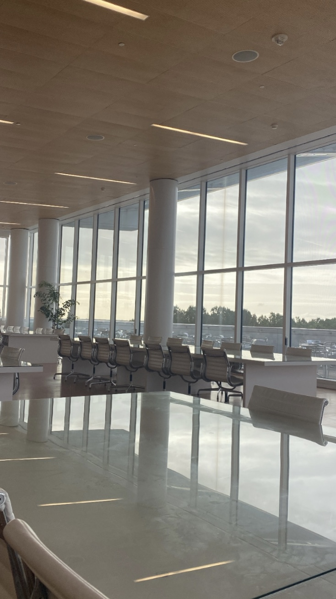

Job Titles
- Walnut Street Animal Hospital
- Panera Bread
- Port City Java
- NCSU Turtle Rescue Team
- Institute for Transportation Research and Education (ITRE) at NCSU
Job Description
- Role of job at Walnut Street Animal Hospital-veternary technician
- Addressed healthcare needs of animals by coordinating with veterinarians and following order
- Performed laboratory tests, x-rays and other diagnostic tests to check animal health
- Reviewed pet records from daily visits and appointments and entered data
- Role of job at Panera Bread-associate
- Contributed to business growth by confiring customer satisfaction with service and quality
- Delivered fast and friendly service
- Consulted with costumers regarding needs and concerns
- Role of job at Port City Java-associate
- Supported high standards of conduct to support company
- Utilized POS system to receive and process customer payments
- Memorized official and off-menu campus and tea preparations
- Role of job at NCSU Turtle Rescue Team
- Feeding, cleaning, and provided medications to sick/injured turtles, addressed health concerns, symptoms, and history of animals and delivered treatment
- Role of job at ITRE-research
- Building safer, more equitable, sustainable, and accessible transportation through research
- Watching field collected video data from a variety of transporation fields and trascrbing key events onto Microsoft Excel and Google Sheets
- Gathered and documented statistical information to generate reports

What I Learned
- What I learned from the jobs...How to...
- Complete tasks in an organized and timely manor
- Play a team leader
- Take ideas into consderation
- Listen to and provide feedback
- Make conclusions
- How I will apply these skills in future settings
- Listening to other perspectives helped me become more of an effective employee...in future settings I will be able to facilitate these tasks for the greater good of any company